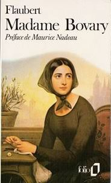

Realismo e Naturalismo
O que foi?
Realismo e Naturalismo são movimentos literários surgidos na Europa, em meados de 1800, como negação do Romantismo. São citadas duas obras principais como as primeiras destes estilos de escrita, respectivamente: Madame Bovary (1857), de Gustave Flaubert e Thérèse Raquin (1867), de Émile Zola.
